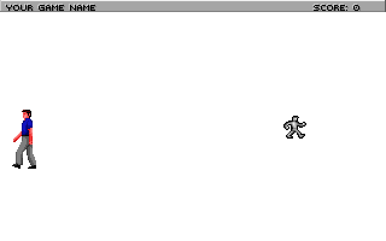

Important
SCI1.1 only.
The first room¶
By default, the TitleScreen.sc script takes you to room 110 when you click on the color button number 0:
(switch temp0
(0 (gRoom newRoom: 110))
(1 (gGame restore:) (self changeState: state))
(2 (= gQuitGame TRUE))
)
Room 110 is already set up for you. Find rm110.sc in the Quick links in the script editor, or open it from the Game Explorer.
When you run the game, your ego will appear on a blank white screen (pic 110). You can switch between the walk, look, do and talk cursors by right-clicking or using the icon bar at the top. To move the ego around, click with the walk cursor.
The init: method¶
Let’s go through each of the pieces of code in init():
(AddPolygonsToRoom @P_Default110)
The above line adds the polygons defined with the pic resource to the room. Polygons define the boundaries of where the ego can go. (If you click on the pic 110 link in the Toolbox, pic 110 will open. Then click on Show polygons in the pic Toolbox, and you’ll see a green rectangle outlined on the pic. This is the single default polygon for this room). In subsequent tutorials we’ll modify this to control where the ego can go.
Next, we have:
(super init:)
Always remember to call (super init:). It’s responsible for drawing the background, among other things. Next, we have:
(switch gPreviousRoomNumber
; Add room numbers here to set up the ego when coming from different directions.
(else
(SetUpEgo -1 1)
(gEgo posn: 150 130)
)
)
(gEgo init:)
This is responsible for placing the ego in different locations depending on what room they entered from. For now, we just have it set up so that when the ego enters from any room to room 110, he’ll be placed at (150, 130). SetUpEgo says to use the default view (-1), and loop 1 (facing west).
Try changing posn: 150 130 to posn: 20 130, and you’ll see the ego appears at a different spot:
Finally, we have:
; We just came from the title screen, so we need to call this to give control
; to the player.
(gGame handsOn:)
Normally you wouldn’t need to put this in your room’s init(). But since we came from the TitleScreen where player input was disabled, we need to do this.
The room script¶
Let’s add a room script. Room scripts give the ability to handle state changes and execute code every game cycle. Place the cursor at the bottom of the script file, right-click and choose Insert Object->Script. Name your script RoomScript:
(instance RoomScript of Script
(properties)
(method (changeState newState)
(= state newState)
(switch state
(0)
)
)
)
Go to your room’s init method, and assign the script to the room:
(method (init)
(AddPolygonsToRoom @P_Default110)
(super init:)
(self setScript: RoomScript)
(changeState newState)¶
By default, when a script is assigned to a room, the changeState method will be called with newState equal to zero. So whatever code you put in in case 0 will be executed. Try this, then compile and run:
(instance RoomScript of Script
(properties)
(method (changeState newState)
(= state newState)
(switch state
(0
(Prints {Case 0!})
)
)
)
)
You’ll note that the text actually comes up right away... before the room has actually been drawn! Let’s modify the changeState method by making it wait four seconds:
(instance RoomScript of Script
(properties)
(method (changeState newState)
(= state newState)
(switch state
(0
(= seconds 4)
)
(1
(Prints {Case 0!})
)
)
)
)
Setting the seconds property of a script will make it trigger the next state after that many seconds. You can also use the cycles property for more fine-grained time.
In other tutorials we’ll see other ways to trigger the next state (like when a certain game event happens), and you could also set a state directly using:
(RoomScript cue: 5) ; Sets state 5
doit:¶
Scripts also have a doit: method which is useful. This is called on every game cycle. To add this, position your cursor inside the RoomScript instance, after the changeState method. Then right-click, Insert Method->doit:
(method (doit)
(super doit:)
)
Now, suppose we wanted the ego to be magically transported back to the left side of the screen whenever they tried to walk past the center of the screen. To do so, each game cycle we’d check to see if the ego’s x position was large than 150. If so, we would position the ego back on the left side of the screen. It would look like this:
(method (doit &tmp x y)
(super doit:)
; Grab the ego's x and y and put them in temp variables
(= x (gEgo x?))
(= y (gEgo y?))
; If the ego is past 150
(if (> x 150)
; Then put him back at 20
(gEgo posn: 20 y)
)
)
Now compile and run, and try to walk the ego to the right side of the screen.
Note that this example introduced temporary variables (following the &tmp token). They are scoped to the method or procedure they are declared in.
Title bar¶
At this point, you may have noticed that the status bar still has a default game name in it (the status bar wasn’t visible on the TitleScreen, so we didn’t notice it). Open message resource 0 and find the the message with the TITLEBAR noun (or Edit->Find in Files and search for “Your game name”). In there, you’ll see:
Your game name Score:
Change this to whatever you want, and modify the spacing if needed so that “Score:” still appears on screen.